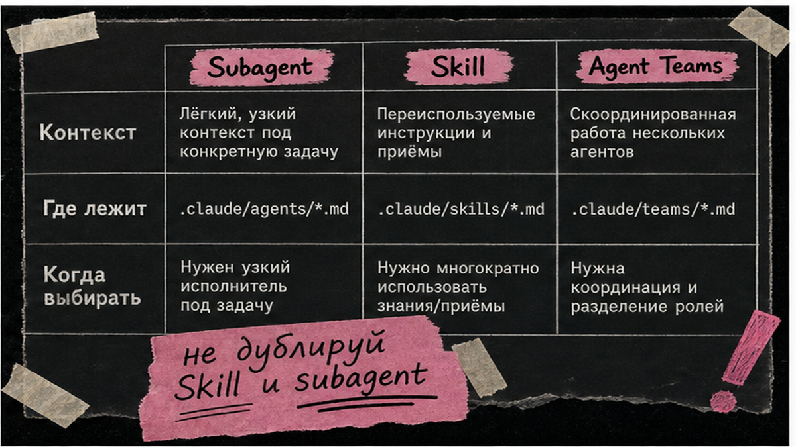
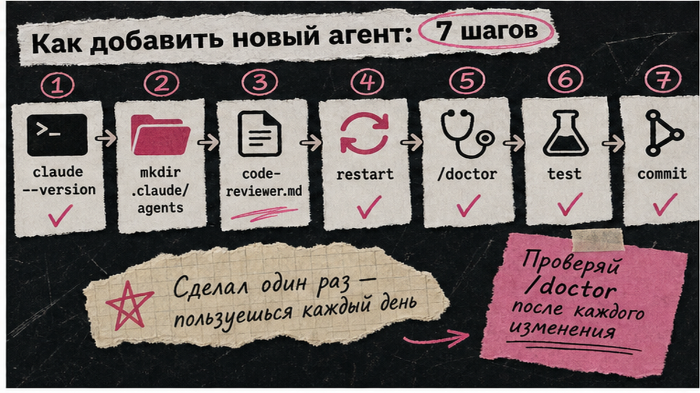
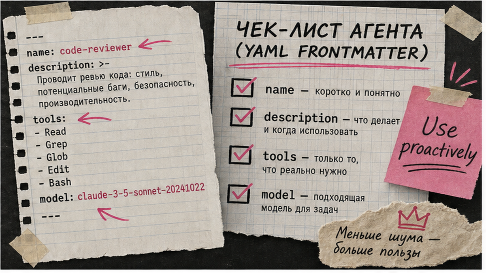

Claude Code умеет делегировать задачи субагентам (subagents), но многие русскоязычные гайды советуют wizard "/agents", который удалили в версии 2.1.198 от 1 июля 2026. Если нужны code review, тесты и security-проверки без ручного копания в каждом файле, настройка subagents claude code начинается с папки .claude/agents/ в репозитории. За 15–25 минут вы создадите первую роль, проверите автоделегирование по полю description и скопируете семь готовых шаблонов под команду.
TL;DR / Быстрый инсайт: Subagent – отдельный помощник в своём контекстном окне: работает с tools и промптом, в основную сессию возвращает только итог. С 2.1.198 subagents по умолчанию в background, wizard "/agents" не открывается. Создавайте роли через prompt Claude или файл .md в .claude/agents/. Поле description – главный триггер автоделегирования; для reviewer ограничивайте tools явным allowlist.
Subagent – Markdown-файл с YAML-шапкой (frontmatter): имя, описание когда вызывать, tools и job prompt в теле. Встроенные роли – только Explore, Plan и general-purpose; code-reviewer и test-writer добавляете сами. Логика похожа на MCP в Cursor: главный агент выбирает специалиста по задаче, а не тащит всё в один чат.

Делегируйте при изолированных задачах (review, audit, тесты) или при 10+ файлах и 3+ независимых подзадачах (блог Anthropic, 7 апреля 2026). Для коротких сценариев в одном чате хватит Skill в .claude/skills/.
| Критерий | Subagent | Skill | Agent Teams |
|---|---|---|---|
| Контекст | Отдельное окно, родитель видит только итог | Инструкции on-demand в main session | Несколько сессий + общий task list |
| Где лежит | .claude/agents/*.md | .claude/skills/ | CLAUDE_CODE_EXPERIMENTAL_AGENT_TEAMS=1 |
| Когда выбирать | Review, security, тесты, discovery | Чеклист в том же диалоге | Долгие параллельные ветки peer-to-peer |
Итоговый вердикт: Для команды – project subagents в git. Skills – повторяемые сценарии в main chat. Agent Teams – только осознанный эксперимент, не onboarding.
Делайте: одна роль – одна задача. Не делайте: дублировать Skill и subagent с одним prompt.

С 2.1.198 "/agents" не открывает мастер (до 2.1.197 – Running/Library). Путь: prompt Claude или ручной .md. Project – .claude/agents/ (commit в git); личные – ~/.claude/agents/.
Workflow: версия 2.1.198+ → scope → code-reviewer.md → перезапуск → тест → commit → /tasks
Делайте: description с "Use proactively" перед commit. Не делайте: onboarding через "/agents wizard" – legacy.

Обязательны name и description. Description – триггер автоделегирования: когда вызывать, не биография. tools – allowlist через запятую; без поля subagent наследует все tools родителя. С 2.1.198 background по умолчанию; Ctrl+B – в фон, /tasks – список задач.
---
name: code-reviewer
description: Review code for bugs, security, style. Use proactively after edits and before commit.
tools: Read, Grep, Glob
model: sonnet
---
You are a senior reviewer. List findings by severity; do not rewrite code unless asked.
Делайте: read-only без Write, Edit, Bash. Не делайте: Bash с сетью у security-ролей.
Семь файлов в .claude/agents/. Built-in только Explore, Plan, general-purpose – остальное custom.
| Файл | name | tools | model | Когда |
|---|---|---|---|---|
| code-reviewer.md | code-reviewer | Read, Grep, Glob | sonnet | Перед commit |
| security-reviewer.md | security-reviewer | Read, Grep, Glob | sonnet | Auth, payments, PII |
| test-writer.md | test-writer | Read, Write, Edit, Bash, Grep, Glob | sonnet | Нет тестов у фичи |
| doc-writer.md | doc-writer | Read, Write, Edit, Grep, Glob | haiku | README, API docs |
| migration-checker.md | migration-checker | Read, Grep, Glob, Bash | sonnet | SQL migrations |
| codebase-explorer.md | codebase-explorer | Read, Grep, Glob, Bash | haiku | Discovery repo |
| architecture-planner.md | architecture-planner | Read, Grep, Glob | sonnet | Design before code |
Шаблон security-reviewer (остальные – та же структура, другие name/description/tools):
---
name: security-reviewer
description: Audit auth, payments, PII. Use proactively on security-sensitive changes.
tools: Read, Grep, Glob
model: sonnet
---
Find OWASP risks, secret leaks, unsafe defaults. Severity list only; no edits.
---
name: test-writer
description: Write tests for new code. Use proactively when coverage is missing.
tools: Read, Write, Edit, Bash, Grep, Glob
model: sonnet
---
Match project test framework; happy path + edge cases.
---
name: doc-writer
description: Update README/API docs after changes.
tools: Read, Write, Edit, Grep, Glob
model: haiku
---
Clear examples and install steps; match existing tone.
---
name: migration-checker
description: Validate DB migrations before deploy.
tools: Read, Grep, Glob, Bash
model: sonnet
---
Check rollback, locks, data loss; suggest dry-run.
---
name: codebase-explorer
description: Map repo structure. Use proactively on large codebases.
tools: Read, Grep, Glob, Bash
model: haiku
---
Summarize modules and entry points; read-only.
---
name: architecture-planner
description: Design before multi-file features.
tools: Read, Grep, Glob
model: sonnet
---
Steps, risks, file list; no code until approved.
Делайте: один commit с семью файлами. Не делайте: выдуманные built-in reviewer/test-writer из коробки.
Subagents в одной сессии; родитель не видит tool calls – только итог. Вложенность до 5 уровней. С 2.1.198 background по умолчанию. Agent Teams – эксперимент (CLAUDE_CODE_EXPERIMENTAL_AGENT_TEAMS=1), отдельные context windows; для старта хватит project subagents.
Делайте: foreground, когда следующий шаг ждёт ответ. Не делайте: путать background subagents с Agent Teams.
Пример: "Before commit → code-reviewer (read-only)" и "Auth/payments → security-reviewer". Explore/Plan не грузят CLAUDE.md родителя. Отключить built-in Explore/Plan: CLAUDE_CODE_DISABLE_EXPLORE_PLAN_AGENTS=1. Разовые роли без диска – флаг --agents JSON.
Делайте: короткие императивы. Не делайте: дублировать длинные prompt из .md в CLAUDE.md.
Делайте: deny опасные tools через allowlist. Не делайте: reviewer с Bash на prod credentials.
Материал проверен: эксперт Артур Хорошев (CEO Maya AI, практик Make.com и Claude Code).
Достоверность данных: v2.1.198 (1 июля 2026), удаление "/agents", scope .claude/agents/ и background-by-default – официальная docs Anthropic на 8 июля 2026.
Команда – .claude/agents/ + git. Личное – ~/.claude/agents/. Приоритет: managed → --agents CLI → project → user → plugin.
Prompt Claude создать .md с YAML или файл вручную в .claude/agents/. "/agents" wizard удалён с 2.1.198.
Слабый description, нет перезапуска после создания каталога, duplicate name в /doctor. Явно: "Use the code-reviewer agent".
Subagent – изолированный context, итог в main. Skill – workflow on-demand в основном чате. Skills, когда сценарий остаётся в main context.
Да; с 2.1.198 background по умолчанию, Ctrl+B и /tasks. Agent Teams – отдельный experimental механизм.
Subagents – одна сессия, отчёт родителю. Agent Teams – peer сессии + shared tasks; CLAUDE_CODE_EXPERIMENTAL_AGENT_TEAMS=1.
Allowlist в tools (Read, Grep, Glob для reviewer). disallowedTools дополнительно. Без tools – наследование всех tools родителя.